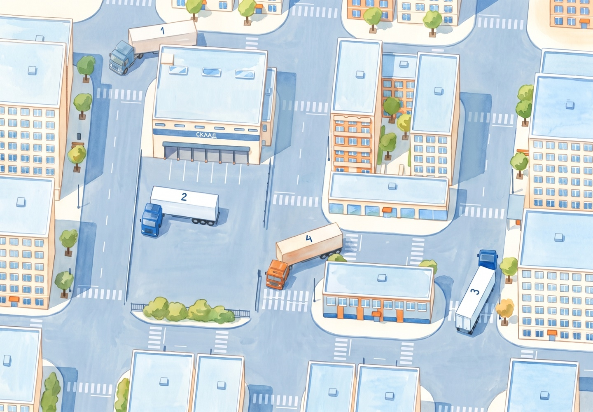
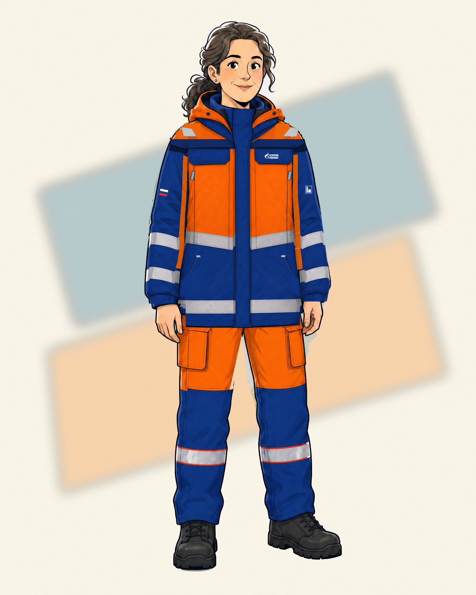
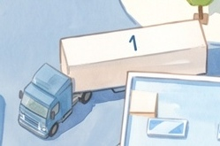
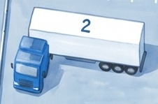
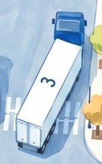
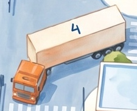
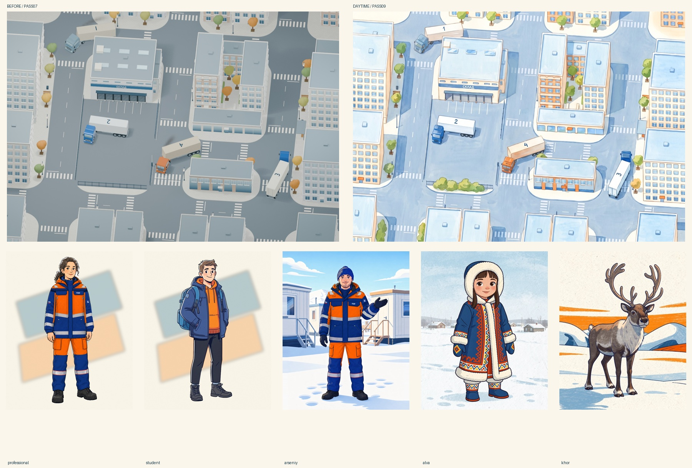

Один мир с персонажами
Дневной город, мягкая кистевая рисовка, потёртые — не грязные — машины.
Статичный художественный кандидат. Это не новая сборка игры: движение, маршруты и адаптивная карта 07 сохранены отдельно. Дым здесь убран; анимация выхлопа ещё не перенесена.


Машины крупно




Проверка с остальными персонажами


До / после и оставшиеся ограничения

Основные дороги, склад и четыре машины остаются на прежних местах. Это художественная перерисовка, не попиксельное сохранение геометрии: часть окон, фасадных деталей и озеленения изменена. Некоторые контуры и направленные тени ещё заметны. Портреты не изменялись.
На телефоне показан тот же кадр, без обрезания машин; крупные фрагменты выше нужны для проверки рисовки. Это не замена мобильной игровой камеры и не проверка движущихся маркеров.
Данные происхождения